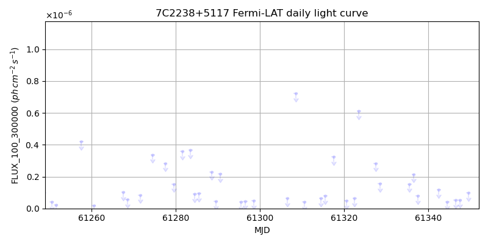
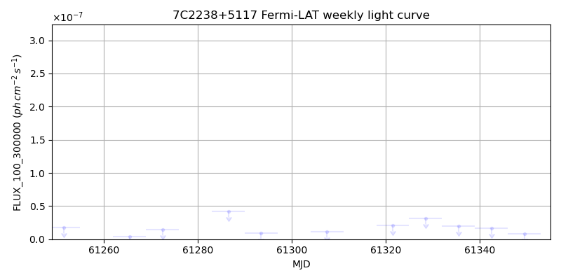
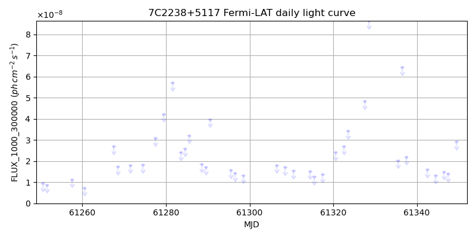
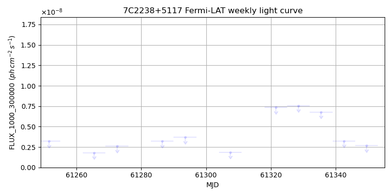

LAT Lightcurve site: https://fermi.gsfc.nasa.gov/ssc/data/access/lat/msl_lc/source/7C_2238p5117
NED: Query
Time of last update of this page: UT: 2026-11-13 16:29 (MJD: 61357.687)
| Property | Value |
|---|---|
| R.A. | 22:40:19.92 |
| Dec. | 51:33:10.8 |
| z | 0.000 |
| 3FGL SpectrumType | |
| 3FGL PL Index | -1.00 |
| 3FGL Flux_100_300000 | -1.00e+00 |
| 3FGL Flux_1000_300000 | -1.00e+00 |
| 3FGL Flux >200 GeV | -1.00e+00 |
| 3FGL Extrap. Crab >200 GeV | -1.00 |
| 3FGL Flux After EBL Absorption >200GeV | -1.00e+00 |
| 3FGL EBL Crab Fraction >200GeV | -1.00 |

| MJD | dMJD | Flux | dFlux | Frac3FGL | FracCrab>200GeV | EBLFracCrab>200GeV |
|---|---|---|---|---|---|---|
| 61342.50 | 0.50 | 1.17e-07 | 0.00e+00 | 0.00 | 0.00 | -0.00 |
| 61344.50 | 0.50 | 4.19e-08 | 0.00e+00 | 0.00 | 0.00 | -0.00 |
| 61346.50 | 0.50 | 5.12e-08 | 0.00e+00 | 0.00 | 0.00 | -0.00 |
| 61347.50 | 0.50 | 5.37e-08 | 0.00e+00 | 0.00 | 0.00 | -0.00 |
| 61349.50 | 0.50 | 9.73e-08 | 0.00e+00 | 0.00 | 0.00 | -0.00 |

| MJD | dMJD | Flux | dFlux | Frac3FGL | FracCrab>200GeV | EBLFracCrab>200GeV |
|---|---|---|---|---|---|---|
| 61321.50 | 3.50 | 2.08e-08 | 0.00e+00 | 0.00 | 0.00 | -0.00 |
| 61328.50 | 3.50 | 3.13e-08 | 0.00e+00 | 0.00 | 0.00 | -0.00 |
| 61335.50 | 3.50 | 1.96e-08 | 0.00e+00 | 0.00 | 0.00 | -0.00 |
| 61342.50 | 3.50 | 1.66e-08 | 0.00e+00 | 0.00 | 0.00 | -0.00 |
| 61349.50 | 3.50 | 8.46e-09 | 0.00e+00 | 0.00 | 0.00 | -0.00 |

| MJD | dMJD | Flux | dFlux | Frac3FGL | FracCrab>200GeV | EBLFracCrab>200GeV |
|---|---|---|---|---|---|---|
| 61342.50 | 0.50 | 1.59e-08 | 0.00e+00 | 0.00 | 0.00 | -0.00 |
| 61344.50 | 0.50 | 1.31e-08 | 0.00e+00 | 0.00 | 0.00 | -0.00 |
| 61346.50 | 0.50 | 1.50e-08 | 0.00e+00 | 0.00 | 0.00 | -0.00 |
| 61347.50 | 0.50 | 1.39e-08 | 0.00e+00 | 0.00 | 0.00 | -0.00 |
| 61349.50 | 0.50 | 2.92e-08 | 0.00e+00 | 0.00 | 0.00 | -0.00 |

| MJD | dMJD | Flux | dFlux | Frac3FGL | FracCrab>200GeV | EBLFracCrab>200GeV |
|---|---|---|---|---|---|---|
| 61321.50 | 3.50 | 7.37e-09 | 0.00e+00 | 0.00 | 0.00 | -0.00 |
| 61328.50 | 3.50 | 7.55e-09 | 0.00e+00 | 0.00 | 0.00 | -0.00 |
| 61335.50 | 3.50 | 6.79e-09 | 0.00e+00 | 0.00 | 0.00 | -0.00 |
| 61342.50 | 3.50 | 3.24e-09 | 0.00e+00 | 0.00 | 0.00 | -0.00 |
| 61349.50 | 3.50 | 2.68e-09 | 0.00e+00 | 0.00 | 0.00 | -0.00 |
--------------------------------------------------------- Using user-supplied coords: 22:40:19.92 51:33:10.8 2000 --------------------------------------------------------- FLWO UT night of: 2026-11-14 Local Sid. @ Midnight: 03:09 Sunset (-15.0) (local, UT): 18:35 01:35 Sunrise (-15.0) (local, UT): 05:42 12:42 Moonrise (local, UT): Moonset (local, UT): 20:50 03:50 Moon phase: 0.22 --------------------------------------------------------- AzTime LSID UT Obj_el Obj_az Mn_el Mn_az Sep. --------------------------------------------------------- 18:35 21:44 01:35 67.4 23.6 20.1 218.2 91.9 19:05 22:14 02:05 69.4 12.1 16.0 223.7 91.8 19:35 22:44 02:35 70.0 358.8 11.6 228.6 91.6 20:05 23:14 03:05 69.1 345.6 6.9 233.2 91.4 20:35 23:44 03:35 66.9 334.7 2.0 237.3 91.3 21:05 00:14 04:05 63.7 326.4 -2.2 241.2 91.1 21:35 00:44 04:35 59.9 320.8 -9.0 244.8 90.9 22:05 01:14 05:05 55.7 317.0 -14.6 248.2 90.7 22:35 01:44 05:35 51.3 314.8 -20.4 251.4 90.5 23:05 02:14 06:05 46.7 313.6 -26.2 254.5 90.3 23:35 02:44 06:35 42.0 313.3 -32.1 257.5 90.1 00:05 03:14 07:05 37.4 313.6 -38.1 260.6 89.9 00:35 03:45 07:35 32.8 314.4 -44.2 263.8 89.7 01:05 04:15 08:05 28.2 315.7 -50.2 267.1 89.4 01:35 04:45 08:35 23.8 317.4 -56.3 270.9 89.2 02:05 05:15 09:05 19.6 319.4 -62.4 275.3 89.0 02:35 05:45 09:35 15.5 321.8 -68.4 281.1 88.8 03:05 06:15 10:05 11.7 324.5 -74.2 289.9 88.6 03:35 06:45 10:35 8.2 327.6 -79.6 306.2 88.4 04:05 07:15 11:05 5.0 330.9 -83.2 343.5 88.1 04:35 07:45 11:35 2.1 334.5 -82.1 35.1 87.9 05:05 08:15 12:05 -0.1 338.4 -77.4 61.2 87.8 05:35 08:45 12:35 -1.7 342.5 -71.8 73.4 87.6 05:42 08:52 12:42 -2.0 343.5 -70.5 75.2 87.5 --------------------------------------------------------- Dark hours >55 deg.: 1.33 srcstart (UT): 2026-11-14 03:50 srcend (UT): 2026-11-14 05:09